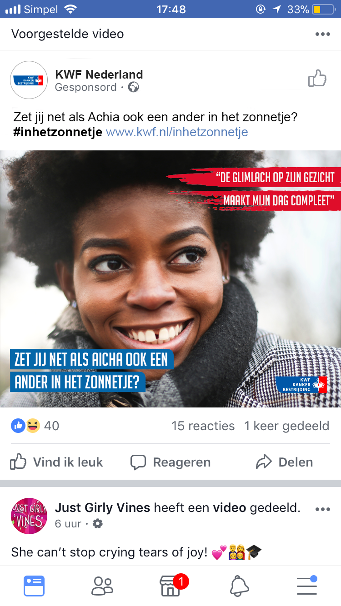
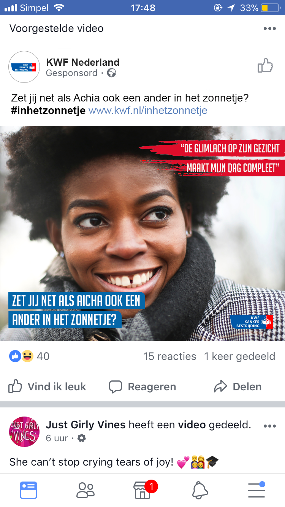

KWF Kankerbestrijding
Naar aanleiding van het vak ’Designing for communities’ is dit project uitgevoerd. De opdracht was om een campagne te maken voor KWF kankerbestrijding die mensen overtuigd om vrijwilligers te worden.


Naar aanleiding van het vak ’Designing for communities’ is dit project uitgevoerd. De opdracht was om een campagne te maken voor KWF kankerbestrijding die mensen overtuigd om vrijwilligers te worden.
Het KWF in Den haag heeft niet genoeg vrijwilligers. Ze hebben meer mensen nodig voor de verzamelweek in september, maar ook voor andere activiteiten. Naast het werven van vrijwilligers wil het KWF mensen bewuster maken van de organisatie en haar doelen.
Het doel is om het aantal vrijwilligers van KWF Den Haag met minimaal 10% te vergroten. Het is de bedoeling dat de doelgroep, inwoners van Den Haag tussen 25 en 65 jaar, een positieve kijk krijgen op het KWF en het ‘verzoek’ om vrijwilligers te worden.
Wanneer er voldoende vrijwilligers zijn kan er meer verzameld worden en kunnen er ook andere activiteiten georganiseerd worden. Er wordt hierdoor meer geld ontvangen waardoor er ook meer onderzoek gedaan kan worden. Dit gebeurt met het doel om kanker uit te wereld te verwijderen. Meer mensen worden genezen en kankerpatiënten krijgen een beter leven.
De volgende user needs en wensen zijn verkregen uit de interviews met de doelgroep:
Het concept voor deze campagne is ‘Een dag als vrijwilligers’. Het idee is om de mensen te laten zien hoe zo een dag eruit ziet. De nadruk ligt op hoe, jij als vrijwilligers, iemand in het zonnetje zet. De campagne bestaat uit verschillende advertentie-elementen zoals posters, flyers en social media, waarbij mensen uit Den Haag van verschillende culturen en leeftijden worden afgebeeld en die vertellen over hun dag als vrijwilligers. Sommige van deze advertenties zijn ook gemaakt in verschillende talen. Op deze manier kunnen meer mensen, uit deze multiculturele stad, de verhalen makkelijker begrijpen. Hierdoor worden de mensen nieuwsgierig en worden ze bekender met KWF.


 
